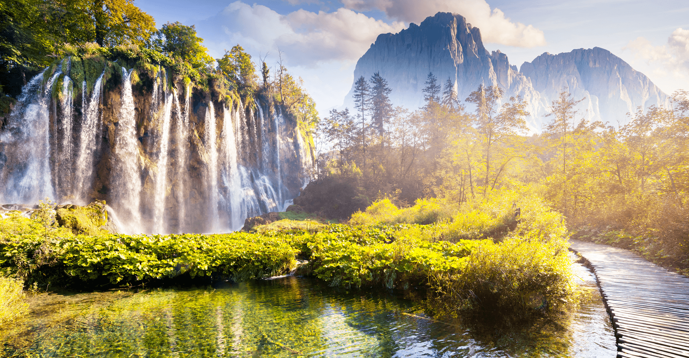
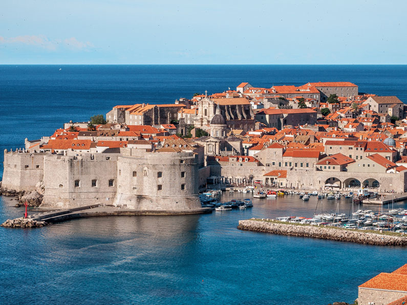
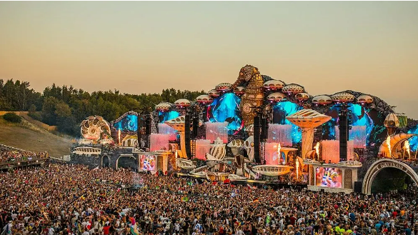
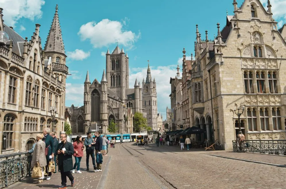
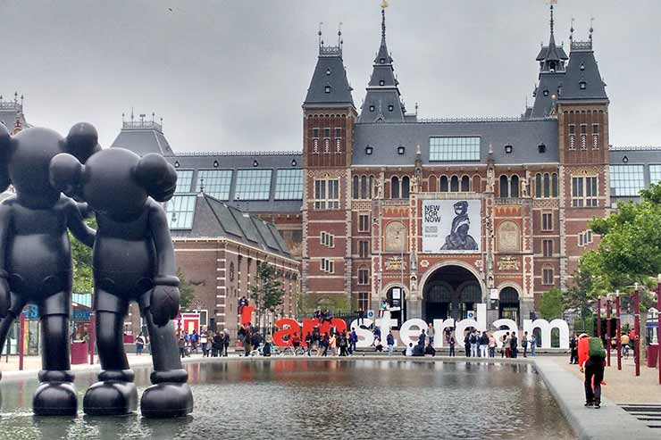
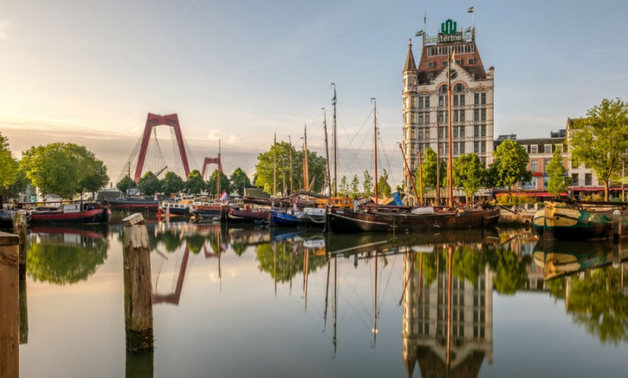

Croacia
Parque Nacional dos Lagos Plitvice
Os Lagos Plitvice são um lugar de beleza natural única e incomparável.
O que torna Plitvice um lugar tão especial é o processo de formação de
tufo calcário, ou seja, as barreiras rochosas.

Dubrovnik
Dubrovnik é a queridinha dos viajantes, une história, natureza,
arquitetura, cultura, ótima gastronomia e as séries mais famosas e
badaladas do momento.

Belgica
Tomorrowland
A Bélgica é o lar de muitos festivais imensos. O maior de todos é o
Tomorrowland, realizado anualmente em uma cidade chamada Boom.

Igrejas e Catedrais
Um exemplo foi A Catedral de São Bavo é uma igreja gótica com uma
torre de 89 metros de altura. Ela foi construída no mesmo local onde
anteriormente ficava a Capela de São João Batista, consagrada no ano
942.

Paises Baixos
Amsterdam
A cidade é famosa por seus quase infindáveis campos de tulipas que
colorem o horizonte e podem ser facilmente explorados de bicicleta.

Rotterdam
Uma das cidades mais modernas da Europa, Rotterdam é considerada berço
da arquitetura contemporânea mundial e, sem dúvidas, um dos melhores
destinos do país.
